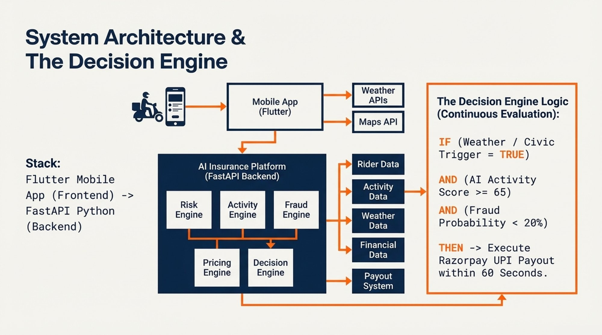

The first AI-powered parametric insurance platform purpose-built for food delivery riders in India. When disruption strikes, GigShield pays — automatically, instantly, and without a single form.
India has 3 million active food delivery riders. On any day with heavy rain, a curfew, or a platform outage, every one of them loses income with no recourse. No insurance product has ever addressed this. GigShield does.
GigShield is not a marginal improvement on existing insurance products. It is a fundamentally new architecture — parametric, automated, and built for the economic reality of gig work in India.
Food delivery riders are India's most financially exposed gig workers. They earn between ₹5,500 and ₹7,000 per week from a platform that gives them no protections, no sick pay, and no compensation when weather, civic events, or the platform itself prevents them from earning. A single severe rain event costs the average rider ₹300 to ₹600 in lost income. A cyclone or multi-day flood can wipe out an entire week's earnings. There is no safety net.
Existing insurance products fail this segment in three compounding ways. Monthly premium cycles don't match weekly income patterns. Claim processes require documentation and manual review that riders cannot navigate. And no product covers the real triggers of income loss — parametric weather events, platform outages, and civic disruptions — because verifying them in real time without platform API access was considered architecturally infeasible. GigShield solves this.
GigShield eliminates the claims process entirely by replacing it with a fully automated event-detection and verification pipeline. The rider never interacts with the system to receive a payout.
The central innovation in GigShield is solving the platform API gap. Delivery platforms like Zomato and Swiggy do not expose rider activity APIs to third parties. GigShield resolves this through a consent-based multi-signal activity model that infers working status from GPS movement patterns, passive sensor readings (network type, accelerometer pattern, ambient sound level), and restaurant-zone proximity — all collected passively in the background by the Flutter app. No platform cooperation is required, and no single signal can be trivially gamed in isolation.
Precision of persona matters in parametric insurance. The disruption-to-income-loss relationship must be direct, immediate, and total. Only one gig segment meets all three criteria.
| Segment | Platforms | Weather Effect on Demand | Income Loss Character | Suitable for Parametric |
|---|---|---|---|---|
| Food Delivery | Zomato / Swiggy | Demand collapses. Orders cancelled. Restaurants close delivery mode. | Immediate, complete, unrecoverable | ✅ Yes — selected |
| Quick Commerce | Zepto / Blinkit | Demand increases. Customers order groceries from home. | No loss — income may rise | ✗ No |
| E-Commerce Logistics | Amazon / Flipkart | Packages rescheduled to next available slot. | Delayed, not eliminated | ✗ No |
Food delivery is the only segment where income stops immediately and completely the moment a disruption occurs. A food order must be fulfilled within 20–40 minutes of placement or it is cancelled permanently — there is no "next day" rescheduling. When rain intensity exceeds the threshold at which riders stop operating, the income loss is real-time, unrecoverable, and requires no documentation to establish. This makes it the ideal parametric trigger: objectively measurable, causally linked to income loss, and verifiable without rider input.
| Parameter | Value |
|---|---|
| Orders per hour (typical) | 3–4 orders |
| Earnings per order | ₹35 – ₹45 |
| Hourly income | ₹120 – ₹160 |
| Average weekly income | ₹5,500 – ₹7,000 |
| Peak hours (lunch) | 12 PM – 3 PM |
| Peak hours (dinner) | 7 PM – 10 PM |
| Monthly disruption income loss | 20–30% of monthly income |
GigShield covers every class of disruption that halts delivery operations — environmental, civic, and platform-level. Each trigger is objectively measurable from third-party data sources with no rider input required.
| Disruption Type | Trigger Threshold | Data Source | Income Impact |
|---|---|---|---|
| Heavy Rain | Rainfall > 15 mm/hour sustained for 20+ consecutive minutes | IMD / OpenWeather API | Orders cancelled, riders cease operations for safety |
| Extreme Heat | Temperature > 42°C + IMD heat advisory issued for district | IMD / OpenWeather API | Platform reduces active delivery zones, riders stop working |
| Flooding | Flood alert issued for rider's active zone | IMD flood alerts | Zone physically inaccessible, complete income halt |
| Severe Air Pollution | AQI > 400 (Severe category) in rider's city zone | CPCB AQI API | Platform advisory issued, significant order volume drop |
| Cyclone / Storm Alert | Orange or Red weather alert for district | IMD district alerts | Full operational halt, all riders off road |
This category is absent from every existing gig worker insurance product. Civic disruptions — curfews, bandhs, Section 144 orders — are equally capable of halting delivery operations completely and are often more sudden than weather events, giving riders no time to adjust their week's income expectations.
| Disruption Type | Trigger Threshold | Data Source | Validation Requirement |
|---|---|---|---|
| Unplanned Curfew | Government curfew order issued for district | Government RSS feeds / News API | Dual-source: government feed + news API |
| Section 144 Order | Prohibitory orders issued for rider's district | Government notification feeds | Dual-source + 40% platform order volume drop |
| Local Strike (Bandh) | Verified bandh affecting rider's active zone | News API + Platform order drop signal | Dual-source + verified restaurant closures |
| Platform Outage | Delivery platform API returns failure responses for 30+ consecutive minutes during peak window | Platform uptime monitoring | Consistent API failure pattern, not single timeout |
Monthly insurance premiums create cash flow mismatch for workers paid weekly. GigShield is the only insurance product priced and collected on a weekly cycle — aligned to when riders earn and spend.
The weekly subscription model is not merely a convenience choice. It is a structural prerequisite for adoption. A rider earning ₹6,000 per week who faces a ₹500 monthly premium must either pay in advance (out of sync with income) or defer (losing coverage). A ₹119 weekly premium deducted alongside other weekly expenses removes this friction entirely. Riders can also pause coverage in weeks they know they will not be working — something impossible with monthly products.
| Risk Tier | Zone Characteristics | Weekly Premium | Coverage Amount | Implied Loss Ratio Target |
|---|---|---|---|---|
| 🟢 Low Risk | Historically low disruption, elevated zones, no waterlogging | ₹79 | ₹600 | 75% |
| 🔵 Medium Risk | Urban mixed zones, moderate disruption history | ₹119 | ₹600 | 72% |
| 🟠 High Risk | Flood-prone, low-lying, or coastal delivery zones | ₹179 | ₹600 | 70% |
| 🔴 Surge Pricing | Active severe weather alert issued in zone | ₹199 | ₹600 | 68% |
GigShield does not use a fixed lookup table. Every rider receives a personalised weekly premium computed by a hybrid AI risk model combining historical disruption data with 7-day predictive forecasts. Here is the full methodology, formula, and three worked examples end-to-end.
The core innovation in GigShield's pricing engine is that it does not rely on historical data alone, nor on forecast data alone. It combines both through a weighted hybrid formula. Historical data tells us what a zone's long-run risk profile is. Forecast data tells us what is likely to happen in the specific week the rider is buying coverage. Neither is sufficient on its own — a zone with high historical risk may have a clear week ahead, and a low-risk zone may face an unusual storm forecast. The hybrid model captures both dimensions.
Once the hybrid disruption risk percentage is established, the premium is calculated in four clean steps.
| Component | Value / Range | Source |
|---|---|---|
| Historical Risk Score | Weight: 60% | 3 years of IMD pin-code records, CPCB AQI logs, civic event logs |
| Forecast Risk Score | Weight: 40% | OpenWeather 7-day forecast API, updated weekly |
| Coverage Cap | ₹600 (fixed) | Derived from rider income data — 47% of maximum weekly exposure |
| Operational Margin | 1.30 (fixed) | Platform ops 10% + fraud reserve 10% + reinsurance buffer 10% |
| Zone Multiplier | 0.80 to 1.30 | GIS terrain data + IMD historical waterlogging records |
| Seasonal Loading | 1.00 or 1.15 | IMD monsoon season flag — 1.15 applied June–September only |
| Loyalty Discount | ₹0 to ₹15 | ₹5 per 6 months of continuous coverage with no fraud flags |
The hybrid risk model is retrained on a monthly cadence using accumulated claims data, actual disruption event logs, and rider activity records from the preceding 90 days. As real payout data accumulates and zone-level risk profiles sharpen, the historical risk scores become more accurate at the pin-code level — reducing pricing error over time. For the initial launch phase, the model is initialised with simulated training data generated from IMD historical records and a synthetic rider behaviour dataset calibrated to delivery patterns in Mumbai, Bangalore, and Delhi.
The absence of platform API access is the central technical challenge of gig worker parametric insurance. GigShield resolves it through a consent-based multi-signal activity model that no single signal alone can fake.
Zomato and Swiggy do not expose rider activity data to third parties. GigShield infers working status from independent signals that a genuine working rider produces naturally — and that a fraudster attempting to fake a claim cannot simultaneously produce convincingly across all dimensions.
GigShield uses a two-tier fraud architecture. The device layer defeats opportunistic individual fraud. The system layer defeats coordinated syndicate attacks. Each tier targets a different attacker profile. Neither tier relies on the other.
The Threat: Organized syndicates coordinate via Telegram. Members install GPS spoofing applications that simulate realistic delivery-zone movement — gradual, plausible routes through known restaurant clusters. During a red-alert weather event, 500+ riders activate simultaneously. The payout system sees hundreds of "active" riders in the disruption zone. The liquidity pool drains in minutes.
The honest position: GPS spoofing at the device level cannot be fully stopped — telecom companies do not expose cell tower data directly to third-party apps, and sophisticated spoofing tools can simulate realistic movement. GigShield does not overclaim device-level detection. Instead, the primary defense against syndicates operates at the system level — using signals that no individual rider or group of riders can manipulate from their phone.
The fraud engine handles three distinct individual fraud patterns, each with a specific detection mechanism and automated response.
Rider is at home during a claimed shift. Their device barely moves — GPS shows a radius under 100 metres for 30+ consecutive minutes while the shift is declared active.
Rider activates a shift only because they saw a weather alert — their shift start time wildly mismatches their historical working pattern. Detected by the Isolation Forest model comparing against the rider's own 90-day baseline.
Rider uses a basic spoofing app that produces physically impossible movement — sustained speeds above 60 km/h in heavy traffic, or a sudden location jump of more than 5 km with no travel time.
For fraud that passes the basic movement checks — someone who walks outside or uses a moderate spoofing tool — GigShield adds a passive sensor verification layer using three signals available in the Flutter app that together cover three independent physical dimensions. A fraudster would need to simultaneously satisfy all three to pass, which functionally means they would need to actually be working.
The simplest and most reliable signal. Checks whether the device is connected to mobile data or a saved home Wi-Fi network at the time of a trigger event. A rider actively delivering in a disruption zone will almost always be on mobile data. A rider at home will almost always be on their home Wi-Fi network.
Implementation requires two lines of code using the navigator.connection API. Works on Android and iOS with no additional permissions beyond those already granted for GPS tracking.
The strongest device-level signal. Uses the DeviceMotion API available in all Flutter contexts. During an active shift, the app samples accelerometer readings every 30 seconds. A two-wheeler in urban traffic produces a distinctive pattern — irregular vibration, stop-start acceleration, and turning forces. A person sitting at home produces a flat or near-zero variance pattern.
The check is not complex ML — just a variance threshold. If the standard deviation of accelerometer readings over a 5-minute window is below a threshold consistent with stationary behaviour, the signal flags low activity confidence.
Uses the Web Audio API to measure ambient decibel level only — no audio is recorded or stored, just a numeric reading. A food delivery zone during peak hours reads measurably louder than a quiet residential area. The app samples once every 2 minutes during a shift and logs the average level.
This is fully privacy-safe: no audio data leaves the device. Only the decibel number is transmitted to the backend. Implementation is achievable in one day and provides a third dimension of physical environment verification that is completely independent of GPS and motion.
These three signals are named collectively as the Passive Sensor Verification Layer. The name is accurate — all three signals are collected passively with no rider interaction required — and precisely describes the mechanism: physical environment verification through device sensors rather than GPS coordinates alone.
The device layer stops the individual couch claimer and moderate spoofer. It does not stop a sophisticated syndicate where 500 people walk outside simultaneously and pass all three sensor checks. That attack is stopped by four system-level mechanisms that operate on data no individual rider or group can manipulate from their phone.
| System Mechanism | What It Monitors | Why It Cannot Be Spoofed | Response |
|---|---|---|---|
| Order Volume Anchor | Zone-level platform order volume via API proxy | Comes from the platform's servers — no individual rider can manipulate this. A real disruption produces a ≥35% order drop. A fake one does not. | No payout fires without confirmed order volume drop. This is the single most powerful anti-spoofing mechanism in the system. |
| Zone Velocity Circuit Breaker | Claim submission rate vs 30-day rolling baseline | 500 fraudsters claiming simultaneously is statistically impossible to fake as organic behaviour. | If claim volume exceeds 3× baseline in any 20-minute window, all zone payouts suspend automatically — no human needed. |
| Temporal Activation Spike | Shift activation timestamps per zone | Genuine riders activate organically across a natural time distribution. A Telegram alert produces a coordinated spike no real behaviour pattern replicates. | 20+ riders activating in the same zone within 3 minutes triggers a cohort hold pending manual review. |
| Isolation Forest Baseline | Individual rider behaviour vs their own 90-day history | The model compares each rider against themselves — not the population. A fraudster with no delivery history produces no baseline match. | Claims deviating from the rider's own historical pattern are flagged regardless of whether any individual signal passes. |
The most important constraint in fraud defense is that the same conditions enabling fraud — poor network, a phone in a bag, a quiet outdoor area — are also conditions genuine riders experience. A system that is too aggressive will wrongfully delay payments for riders who need them most. GigShield resolves this through a three-tier resolution workflow.
The trigger engine evaluates four independent conditions simultaneously before any payout is authorised. This four-gate architecture is what makes zero-touch payouts possible without enabling mass fraud.
| Gate | Condition | Source | Threshold |
|---|---|---|---|
| Gate 1 | Disruption Confirmed | Weather / civic / platform APIs | Trigger threshold met for rider's active zone |
| Gate 2 | Rider Activity Verified | Multi-signal GPS + passive sensor model | Composite activity score ≥ 65 |
| Gate 3 | Fraud Score Clear | Isolation forest + contradiction model | Fraud probability < 20% |
| Gate 4 | Order Volume Decline | Zone-level platform API proxy | ≥ 35% decline vs 30-day rolling baseline |
Gate 4 — the order volume anchor — deserves specific explanation. A spoofing attack that successfully fakes all activity signals still cannot fake a zone-level platform order volume decline. When a genuine disruption occurs, restaurants in the affected zone disable delivery mode and customer order rates drop measurably. This drop is observable from the platform API response patterns that GigShield already monitors for the outage trigger. Without this observable drop, no automated payout is issued — regardless of how convincing the individual rider signals appear.
GigShield is a five-engine FastAPI backend connected to a Flutter mobile frontend. Every payout decision flows through a continuously evaluating decision engine that combines live external data with per-rider AI scoring.

The Decision Engine runs as a continuous evaluation loop — not a batch job. Every time any input signal changes (a new weather reading, an updated activity score, a civic alert), the engine re-evaluates all active riders in the affected zone. This is what enables the 60-second payout target: the decision is already partially evaluated before the triggering event completes.
Flutter frontend, FastAPI backend, hybrid AI risk model, and Redis-based real-time state management — selected for production viability, development speed, and the ability to serve all platform layers from a single codebase.
GigShield is designed to sustain real-world deployment. The unit economics are grounded in actual rider income data, realistic disruption probability estimates, and a loss ratio target benchmarked against the parametric insurance industry.
The most capital-efficient distribution channel is a direct integration with Zomato and Swiggy — offering GigShield as an opt-in weekly benefit visible within the rider earnings section of the platform app. This channel eliminates customer acquisition cost entirely and reaches riders at the moment they are most likely to value income protection: immediately after viewing their weekly earnings. Secondary channels include WhatsApp-based community onboarding through delivery partner associations and digital kiosks at high-density pickup zones such as food courts and restaurant clusters.
| Risk | Severity | Mitigation |
|---|---|---|
| GPS spoofing by organized syndicates | Critical | Passive sensor verification layer, order volume anchor, zone velocity circuit breaker, temporal activation analysis, isolation forest baseline |
| Legitimate claims wrongly flagged and delayed | High | Tiered resolution with 2-hour soft hold, passive re-evaluation, 7-day appeal window, ₹25 goodwill credit for wrongful denials |
| False social disruption triggers from unverified sources | High | Dual-source validation: government feed + independent news API + minimum 40% platform order volume drop signal required |
| Platform API unavailability for activity verification | Medium | Shift declaration model with rider consent; voluntary delivery receipt upload as supplementary evidence; multi-signal model tolerates partial data |
| Adverse selection — high-risk riders disproportionately subscribing | Medium | Zone-based risk tiering ensures premiums reflect actual zone risk; dynamic AI pricing adjusts upward during high-forecast weeks; seasonal loading applied automatically |
| Low rider digital literacy causing onboarding abandonment | Low | 4-minute onboarding target; WhatsApp-native communication throughout; regional language support; no documentation uploads except optional KYC |